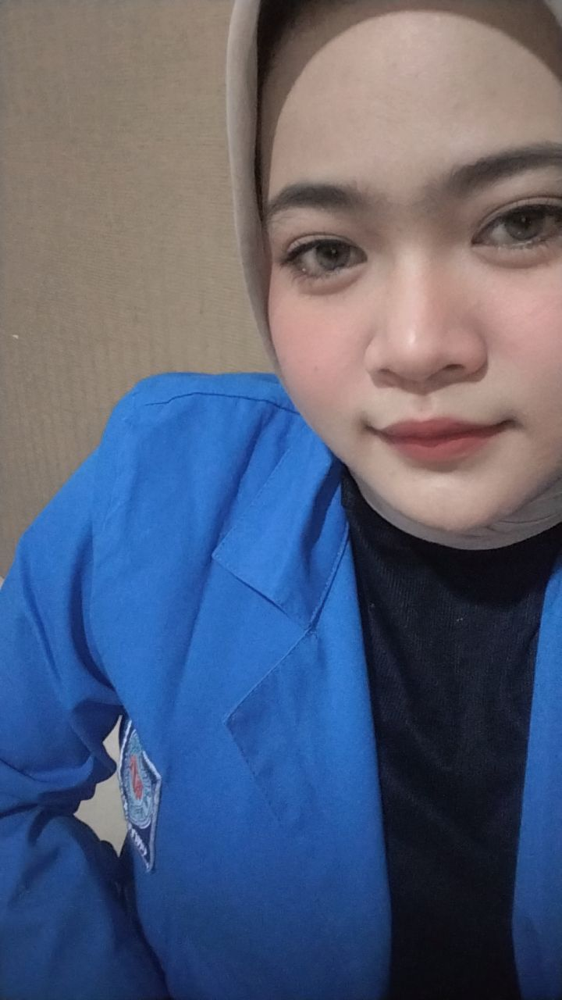

INFORMATION SYSTEMS STUDENT
Hi, I’m Seiska! ♡
Data Analytics · Cybersecurity · UI/UX
Mahasiswa S1 Sistem Informasi di Universitas Bina Sarana Informatika yang tertarik pada data, keamanan informasi, dan desain digital. Senang belajar hal baru, menganalisis masalah, dan membangun solusi teknologi yang bermanfaat.
✿

keep learning,
keep growing ♡
keep growing ♡
A LITTLE BIT OF EVERYTHING
Explore my world ♡
Teknologi, data, desain, dan pengalaman yang terus berkembang.
CURRENTLY GROWING
Let’s connect ♡Curious mind, thoughtful work.
Terbuka untuk kesempatan belajar, kolaborasi, dan pengalaman baru.